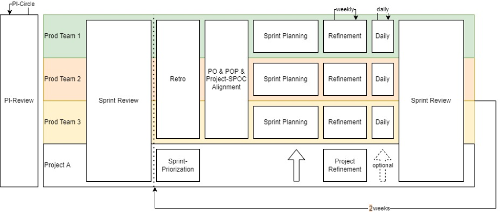
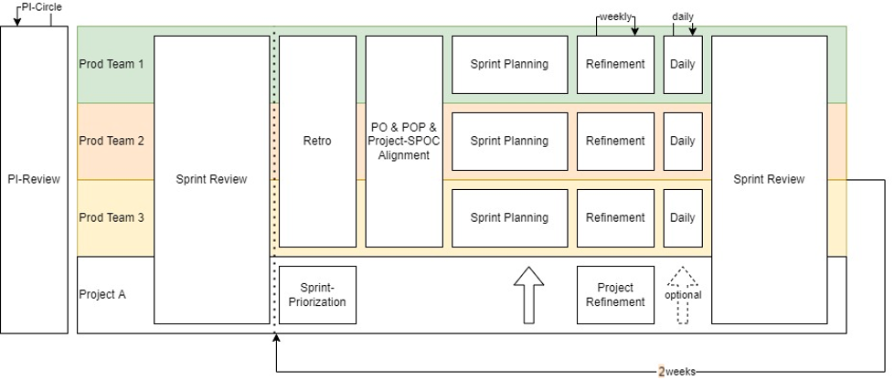
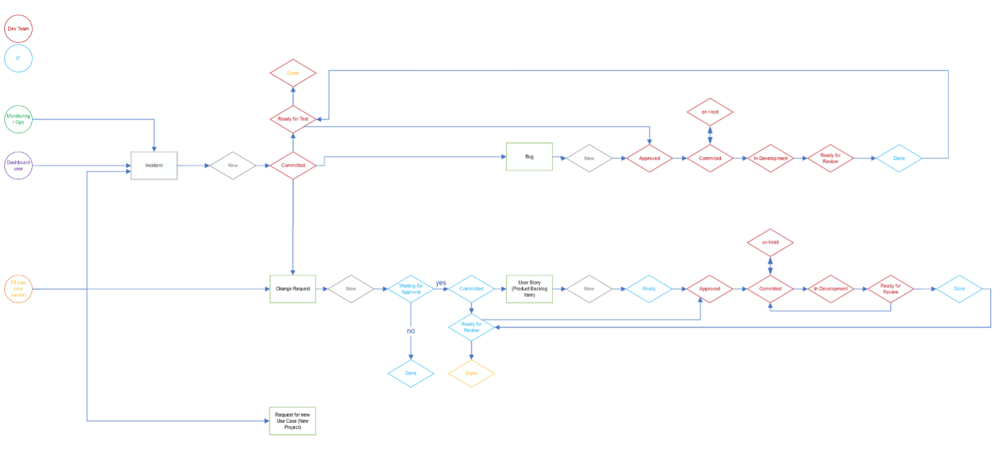
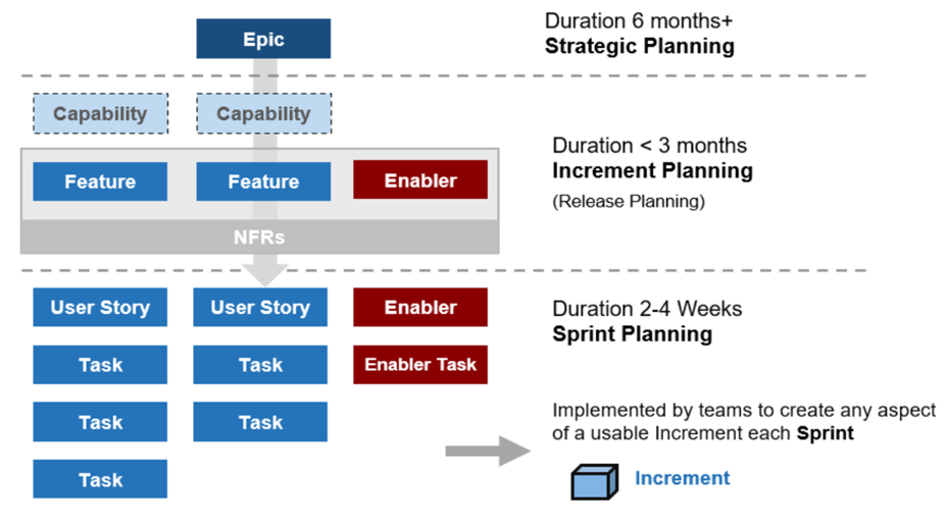
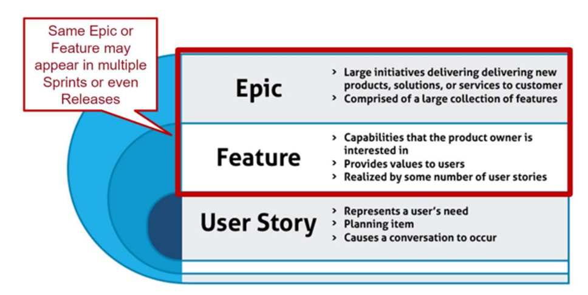
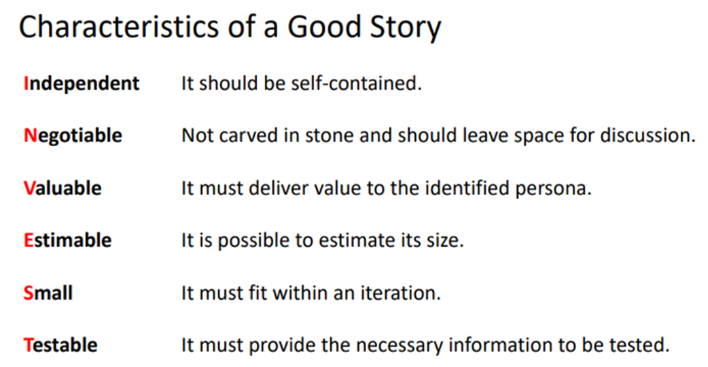

Agile Practices
1. Planning Interval (PI)
Agenda
| Day | Agenda | Time |
|---|---|---|
| 1 | Intro and Welcome | 5 mins |
| 1 | Business Context | 10 mins |
| 1 | Platform | 30 mins |
| 1 | Data Product and Use Case- Achievement and Goals | 135 mins |
| 1 | ART Risks | 60 mins |
| 1 | ART SWOT | 60 mins |
| 2 | Domain level Plan | 60 mins |
| 2 | Resource, tool plan and allocation | 60 mins |
| 2 | Finalized planning and Commitment | 135 mins |
| 2 | ART Goal | 15 mins |
| 2 | Closing and Retrospective | 30 mins |
Domain Team Preparation
- Prepare
- Backlogs
- Draft plan
- Objectives (Committed and Uncommitted)
- Vision
- Grouping Features and Data Products under objectives.
- Assign Business Values to the Objectives- To be finalized in PI
- Design Features and data products that can be accomplished within a PI and plan accordingly for next 3 months.
- Work on Risks and SWOT, keeping ART in mind
- Resource and tool requirements
2. Scrum Ceremonies
Our Meeting Structure

Note:
- Teams are requested to avoid regularly scheduled meetings outside Scrum Ceremonies to ensure developers get maximum productive work hours.
- Ending a call 5 minutes earlier can help participants get a small break if they have continuous meetings. Hence schedule calls for 25 minutes instead of 30, 55 minutes instead of 60 minutes, and so on.
How do our meetings look like?
Meetings should have:
- An agenda ==> Clarification regarding goal, structure and participants // The agenda is part of the invitation
- A facilitator/moderator/host ==> Keep everybody in line, follow timelines and the goal of the meeting. Scrum Master acts as facilitator, moderator, and host for all Scrum Ceremonies.
- A proper documentation
- Actions to take ==> e.g. Product Backlog Items & Tasks
- For the benefit of all and to save time it helps if the participants comes prepared with precise and concise details.
- Please ensure to reply to the meeting invites, "Accept", "Decline" or "Propose new time" as applicable.
- In case a meeting is not useful to you either decline or reach out to your Scrum Master for support.
Meeting Structure
Event
Participants
Content
Duration
Point in time
Backlog Refinement
PO & Dev-Team
Presentation and discussion of new content (Features/Stories) by the PO with the target to make them ready to break them down for development in upcoming sprints-estimation of features & stories
60 minutes
every week
Project Refinement
ProjectResponsibles(PR) & Project BA (@CH)(optional) Domain-PO(s)
Presentation and discussion of new content (Features/Stories) by the PRs with the target to make them ready to break them down for the Domain refinements and/or the Domain Sprintplannings
60 minutes
defined by PBA & PRs
Sprint Planning
PO & Dev-Team
Definition Sprintbacklog and goal, assignment US to Developers and break them down into Tasks
60+60 minutes
all 4 weeks Wednesday (week1)
Sprint Review
all project members & stakeholders
Every team presents Sprint results(in timeblocks published as agenda)- Get Customer Feedback- Define shipment to INT
120 minutes
all 4 weeks Tuesday (week4)
Sprint Refinement ("Sprint Kick-off")
all project members
Every team presents the Sprintgoal and the according Sprintbacklog of the upcoming Sprint(10 minutes per team)
60 minutes
all 4 weeks Thursday (week1) from to
PO, POP & PBA Alignment Mini PI
POs, POPs and PBA
Discussion of integrative topics for the next sprint as well as an overall priorization regarding that topics
60 minutes
all 4 weeks before Sprintplannings
Retrospective
All project members and stakeholders depending on PI cycle
Plan ways to increase quality and effectiveness
60-90 minutes
all 4 weeks Thursday (week4) from to
Daily
PO & Dev Team
Answer daily questions look for impediments to resolve
15 minutes
as needed. Set by PO
Our Meeting Structure
Note:
- Teams are requested to avoid regularly scheduled meetings outside Scrum Ceremonies to ensure developers get maximum productive work hours.
- Ending a call 5 minutes earlier can help participants get a small break if they have continuous meetings. Hence schedule calls for 25 minutes instead of 30, 55 minutes instead of 60 minutes, and so on.
How do our meetings look like?
Meetings should have:
- An agenda ==> Clarification regarding goal, structure and participants // The agenda is part of the invitation
- A facilitator/moderator/host ==> Keep everybody in line, follow timelines and the goal of the meeting. Scrum Master acts as facilitator, moderator, and host for all Scrum Ceremonies.
- A proper documentation
- Actions to take ==> e.g. Product Backlog Items & Tasks
- For the benefit of all and to save time it helps if the participants comes prepared with precise and concise details.
- Please ensure to reply to the meeting invites, "Accept", "Decline" or "Propose new time" as applicable.
- In case a meeting is not useful to you either decline or reach out to your Scrum Master for support.
Meeting Structure
| Event | Participants | Content | Duration | Point in time |
|---|---|---|---|---|
| Backlog Refinement | PO & Dev-Team | Presentation and discussion of new content (Features/Stories) by the PO with the target to make them ready to break them down for development in upcoming sprints-estimation of features & stories | 60 minutes | every week |
| Project Refinement | ProjectResponsibles(PR) & Project BA (@CH)(optional) Domain-PO(s) | Presentation and discussion of new content (Features/Stories) by the PRs with the target to make them ready to break them down for the Domain refinements and/or the Domain Sprintplannings | 60 minutes | defined by PBA & PRs |
| Sprint Planning | PO & Dev-Team | Definition Sprintbacklog and goal, assignment US to Developers and break them down into Tasks | 60+60 minutes | all 4 weeks Wednesday (week1) |
| Sprint Review | all project members & stakeholders | Every team presents Sprint results(in timeblocks published as agenda)- Get Customer Feedback- Define shipment to INT | 120 minutes | all 4 weeks Tuesday (week4) |
| Sprint Refinement ("Sprint Kick-off") | all project members | Every team presents the Sprintgoal and the according Sprintbacklog of the upcoming Sprint(10 minutes per team) | 60 minutes | all 4 weeks Thursday (week1) from to |
| PO, POP & PBA Alignment Mini PI | POs, POPs and PBA | Discussion of integrative topics for the next sprint as well as an overall priorization regarding that topics | 60 minutes | all 4 weeks before Sprintplannings |
| Retrospective | All project members and stakeholders depending on PI cycle | Plan ways to increase quality and effectiveness | 60-90 minutes | all 4 weeks Thursday (week4) from to |
| Daily | PO & Dev Team | Answer daily questions look for impediments to resolve | 15 minutes | as needed. Set by PO |
3. Item Definition (Definition of Ready & Done)
Definition of Ready (DoR) for Features
Target of DoR for Features
A Feature is ready when it can be picked for Release Planning (every 3 Sprints), where it can be further refinement and broken down in product backlog-items with the Business Consultant and DEV-Team.
General Requirements for Features
To ensure an efficient and high quality development process, feature-items should be clear & feasible.
Clear Description and Target of Features:
- The feature must be described in first hand in the form of a user story:
As a [type of user], I want [functionality/goal], so that [value/reason] - Dependencies to Predecessor / successor / related features are defined
- For clarifying upcoming questions name a Contact person / Product Owner
- How does the feature benefit the customer, users and other stakeholders?
This needs to be clearly and easily described. It has to be clear if all Scrum Team members have a shared understanding of what it means. POs can readily explain what it means and explain it to the dev team. If there is no knowledge to explain it, then the feature is not ready and might be deleted from the product backlog due to no clear value. - What overall functionalities(s) does the feature comprises?
Describe in detail what functionality should be implemented. The main functionalities must be described clearly without too much details. By doing so in first step the Feature can be broken down into sub-functionalities, without proper technical requirements. The initial breakdown should help the Business Consultant and DEV-Team to understand the feature better and will also support the detailed breakdown in the release planning and refinement meetings
Feasibility of a feature:
- The feature-Item must be technically feasible to implement. However this will be down with the help of the Business Consultant and DEV-Team in the release planning and refinement meetings. In a first step the Product Owner must only ensure that the main functionalities are broken down and described as feasible as possible.
- During the release planning meeting the feature will be further broken down in technical and additional functional requirements by the help of the Business Consultant and DEV-Team.
- Acceptance Criteria: How can be measured if the Feature-item is implemented complete and correct
- This implies that the feature is also estimable enough for prioritization purposes (so it doesn't have a false position in the backlog)
- The feature may be small enough to be completed within one release planning iteration (3 Sprint). However this is not mandatory.
- If there is too much uncertainty or technical risk, an enabler-item should be broken out to be directly address the issues. This must be part of the prioritization of the feature.
- If the Feature it is not easily understandable for the Business Consultant and DEV-Team with respect to further breakdown and implementation, it is not ready.
Diverse
Furthermore the INVEST principles (defined by William Wake) can help to be more deep and concrete. They help to write and frame good feature & product backlog items.
Definition of Ready (Product Backlog Items)
Target of DoR for Product Backlog Items:
A Product Backlog Item is ready when it can be picked in a Sprint Planning and is refined as well as approved by the DEV-Team.
General Requirements for Product Backlog Items:
To ensure an efficient and high quality development process, product backlog-items should be clear & feasible.
Clear Description and Target of Product Backlog Items:
- The product backlog-item must be described in first hand in the form of a user story:
As a [type of user], I want [functionality/goal], so that [value/reason]. - Dependencies to Predecessor / successor / related features/product backlog items must be defined
- The mother-feature must be defined
- For clarifying upcoming questions name a Contact person / Product Owner
- Definition of possible non functional requirements (compute-time, availability, ...)
- How does the product backlog-item benefit the customer, users and other stakeholders?
This needs to be clearly and easily described. It has to be clear if all Scrum Team members have a shared understanding of what it means. If there is no knowledge to explain it, then the feature is not ready or is not on the right level of product backlog and might be deleted from the product backlog due to no clear value. - What concrete functionality does the product backlog-item comprises?
Describe in detail what functionality should be implemented with the product backlog-item. The main functionality must be described clearly without too much details. Always have in mind the mother-feature as well as related user stories. The initial breakdown of a product backlog-item should be ensured by the product owner after the release planning meeting.
The first breakdown of a product backlog-item should help the Business Consultant and DEV-Team to understand the product backlog-item better and will also support the detailed breakdown in the refinement meetings – also with respect to additional technical product backlog-items.
Feasibility of a Product Backlog Item:
Similar to the feasibility of features, with focus on product backlog items.
Diverse:
Further more the INVEST principles (defined by William Wake) can help to be more deep and concrete. They help to write and frame good feature & product backlog items.
The acronym is defined as follows:
- Independent: The item stands for itself and is independent of other items. A predecessor or successor is allowed, but the increment can be developed independently within the iteration.
- Negotiable: The content is negotiable and is gradually described in more detail until it can be implemented. This requires to be created with a longer forerun, that it can be refined over several iterations between development team and product owner.
- Valuable: It is valuable and offers the user or customer added value or benefit. Ideally the value should be measurable and the measure should be described.
- Estimable: The developer must be able to estimate the effort. Please find some details here: Estimation
- Small: It is so small, that it can be implemented within one iteration (Sprints).
- Testable: It has acceptance criteria and can be checked and tested (mandatory for product backlog-items.
Definition of Done (DoD)
- Artifact of transparency which helps us with inspection and adaption
- A set of criteria or checklist, to check if a Sprint Item is really "done"
Overall:
- All tasks of the product backlog item are done
- All acceptance criteria of product backlog item are fulfilled
- (If defined in product backlog item) Unit Tests are implemented/adapted and running green
- The status of the sprint item is "ReadyForReview" or "fixed"
- Our defined coding guidelines and conventions are met for each technology
- Naming conventions are fulfilled
- Code has been merged to master branch
- Pull-Request reviewed by another person
- Logging (if it makes sense for the product backlog item) respective logging is implemented (e.g. LogAnalytics)
- Service behavior can be reconstructed by the logs (Information/Error level)
- Debug logs are useful for bug analysis
- Documentation is always important. Please follow our guideline in section Documentation
- If applicable, test cases have been created and been executed
- No warnings in code
- Implementation is tested on DEV environment
Exception for Prototyping:
For projects, that are in exploration phase, there are typically not all requirements known. In this case, a deviation from the process above is accepted. Goal is an early involvement of the development team into project progress and scope.
- Acceptance criteria must be fulfilled anyway
- Also documentation is mandatory
However, typically these product backlog item have to be refactored within a follow up item to comply to overall guidelines and quality standards.
4. Ticket Workflow
Ticket Workflow
Source file: Workflow - DigiFactory.vsdx
Product Backlog Item Workflow in Azure DevOps Board
State definition
- New: Item is new and not ready to be estimated
- Removed: Item is removed and was/will not be done
- Ready: Item is described completely and can be estimated
- on Hold: There are open questions which have to be answered
- Approved: Dev Team estimated and approved the item
- Committed: Item will be done in chosen sprint
- In Development: Item is in development
- Ready for Review: Item has been implemented and reviewed and needs to be tested by product owner
- Done: Item is successfully implemented, reviewed, tested and therefore done
5. Boards & Estimation
Introduction
We estimate product backlog item with Story Points. Story points are an abstract estimation value to define the relative complexity/effort of a product backlog item.
Basic guidelines:
- A Storypoint is equivalent to half a developer-day (~3h).
- We only use the following fibonacci numbers to estimate: 1, 2, 3, 5, 8, 13, 21
- A typical mid-size product backlog item should be estimated with 5 story points
- Product backlog items which are estimated with 21 story points should be split into several smaller items as this indicates a high complexity or efforts which can't be handled in one sprint
Which factors are incorporated into the estimation?
- The amount of functionality and necessary work
- The complexity
- Possible risks
Workflow of estimation:
- Each product backlog item effort is estimated before sprint planning
- During refinement, each team member estimates the effort of the product backlog item
- Estimation is done hidden until all members have finished the estimation
- Tools can assist the process, e.g. Estimation tool in Azure DevOps: Estimate
- If all results are relatively similar, the value is transferred to the product backlog item
- If values deviate a lot, the team members of the least and the highest value explain their thoughts to the team
- Subsequently estimation is repeated. The process is repeated until the team agrees on a value.
Application:
After practicing the product backlog item point estimation for some sprints, the dev team will stabilize to a certain amount of story points per sprint. This is a weak indicator of the amount of possible work a team can realize within one sprint. The amount of story points is also named a team's velocity.
However, this is only a tool to help the development team to realistically plan a sprint!
A team's velocity is an absolute fictive and team specific number. It must never be used to calculate costs or compare teams. Each team will evolve its own relative estimation numbers and the values also might change over time.
6. Domain Creation
"CoDE Hub" project space in Azure DevOps contains multiple domains. For each of the domain we create a new "Team" in Azure DevOps and a respective board is created automatically.
Each domain have their own Scrum Team. The roles within the Scrum Team are:
- One Domain owner
- Multiple Product Owners
- Developers
Domain:
- Distribution and Ordering
- Platform
- Production
- Volume
- Buildability
Initiative:
It is the highest level of Work Item Type. An "Initiative" can be a "Program". Often an initiative involves Epics from different domains.
Epic:
An Epic is a large chunk of work under a specific domain that can be divided into Features and PBIs. An Epic can spread across multiple sprints/iterations and across multiple Scrum Teams. An Epic contains multiple Features, PBIs and Bugs. Epic should be written in a simple language that everyone can understand.
Feature:
An Epic can be divided into smaller chunk of work items called Features. Features are planned to be achieved within a Quarter, and can expand over multiple iterations/sprints. We have based the roadmaps in Azure DevOps around Features, these features can be achieved in the current quarter or the future quarters. Reports to the leadership are planned to be presented at Feature level and PI planning too will be done around the Features. A Feature contains multiple PBIs. Feature should be written in a simple language that everyone can understand.
PBIs/ User Stories:
PBIs or User Stories are the smallest chunk of work item type. A PBI can be 3-5 days long and is started and completed within a sprint/iteration. Estimations of "Story Points" are done at PBI levels. All the PBIs are created in Product Backlog land then moved to sprint backlog during the Sprint planning. The Scrum team can also assign Future iterations to the PBIs based on the priorities of the work, during the Sprint Refinement. But this will only act as a placeholder the actual PBIs for the sprint backlog will only be finalized during the Sprint Planning. A PBI needn't be too technical and written in a language that everyone can understand, it must contain "Acceptance Criteria".
Acceptance Criteria:
In Agile, acceptance criteria refer to a set of predefined requirements that must be met to mark a user story complete. Acceptance criteria determine the scope and requirements that must be executed by developers to consider the user story finished.
Acceptance Criteria can be functional or non-functional, but we should try avoiding adding too many Acceptance Criteria to a PBI/User Story.
Task/Sub Task:
These are the sub work that can be created within a PBI by the developers. A Task estimation is based on few hours in a day. A task can be written in technical language by and for the developers.